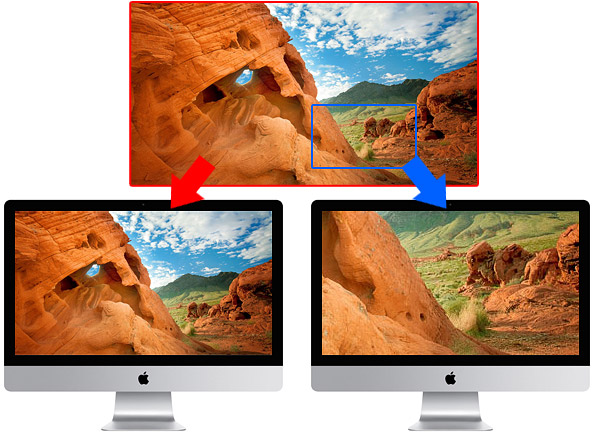
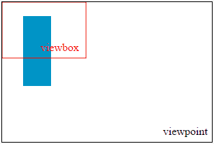

viewbox 也就是 视盒 。它实际上可以看做是真正的一个坐标系，它定义了一个范围。是不是很惊喜？
实际我们再不设置 viwebox 的时候，viewbox 整个范围就是 viewport 的大小，如果指定了 viewbox 的话，则表示，我只需要表现这个区域的东西。

viewbox 需要定义四个数据，也就是(x y width height)。前两个值定义盒子的左上角，后面两个单位定义盒子的右下角。一旦这个坐标系简历了，那么区域里面的所有元素的定位和形状则完全参照这个坐标系建立。
